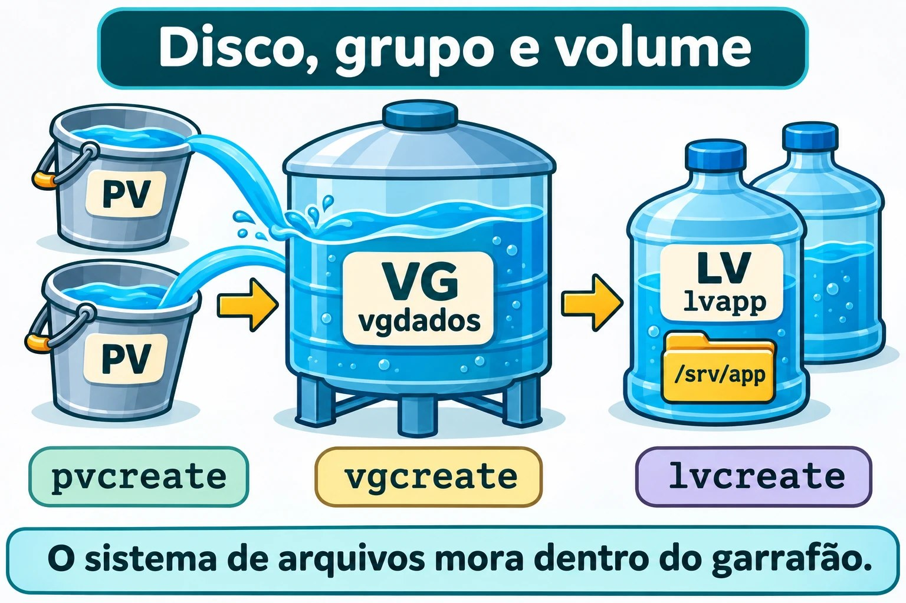
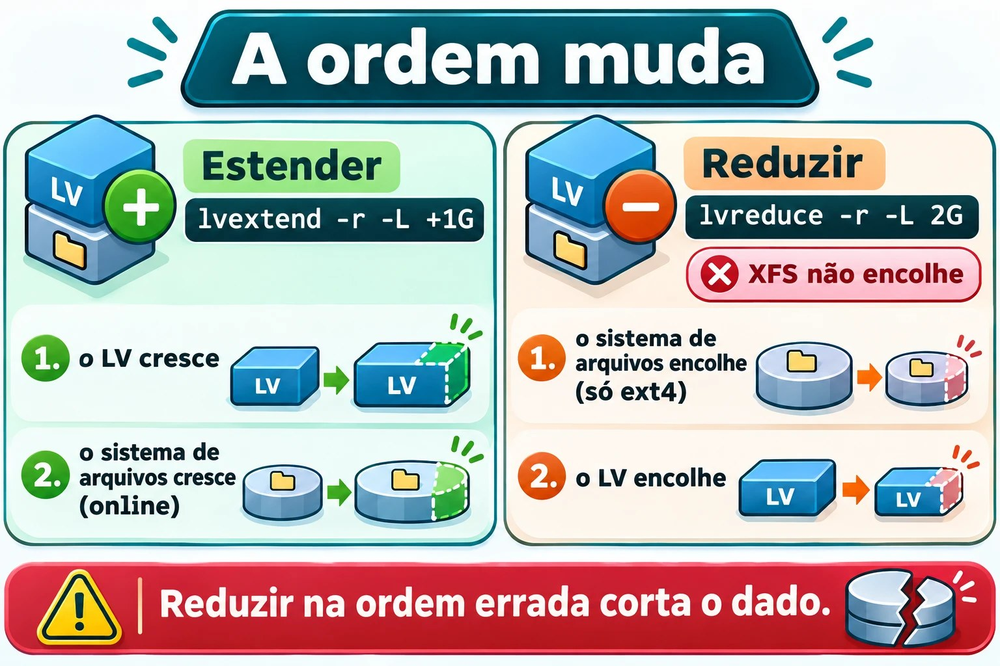
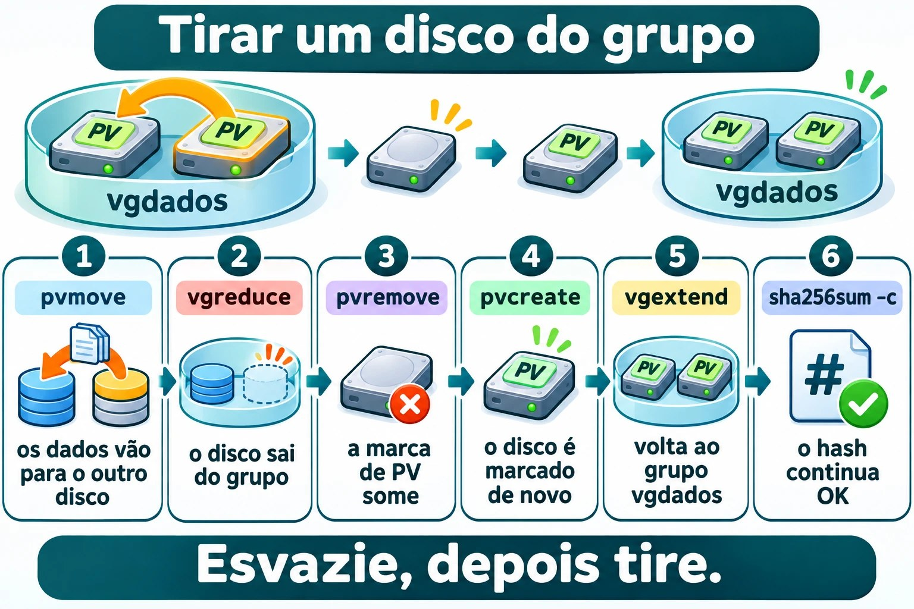

Aula 9.6 · LVM
No Windows, você vira "Espaços de Armazenamento" ou disco dinâmico quando um volume precisa passar do tamanho de um disco. No Linux, essa camada se chama LVM, e o instalador já a usa nas suas duas VMs. Nesta aula você monta um grupo de volumes do zero com dois discos novos, cresce e encolhe um volume sem perder dado, e troca um disco de lugar com o sistema rodando.
Núcleo desta aula: montar a cadeia PV, VG e LV (
pvcreate,vgcreate,lvcreate); ler o estado compvs,vgselvs; estender comlvextend -r; reduzir só ext4, comlvreduce -r; e tirar um disco do grupo compvmove,vgreduceepvremove. O resto é aprofundamento.
| Ficha | |
|---|---|
| Módulo | M9 · Armazenamento, aula 6 de 7 |
| Quando | Semana 14 |
| Ao final | Você cria, estende, reduz e move volumes lógicos, e sabe quando o LVM não ajuda |
| Pré-requisitos | Aulas 9.1, 9.4 e 9.5 |
| Tempo | cerca de 2h30 |
| Snapshots | m9a6-inicio e m9a6-fim na rocky-lab e na debian-lab |
1 · Aquecimento
Responda antes de ler.
- Na 9.1 você viu o layout do disco do sistema. Onde estava o LVM nele?
- Uma partição de 2 GiB está cheia. O que você precisa fazer para ela ficar com 3 GiB?
- Por que
/dev/mapper/debian--lab--vg-roottem hífen dobrado no nome?
2 · Por que importa
| O chamado | A resposta errada | O que ela causa |
|---|---|---|
"O /var encheu" | Apagar log às cegas | Resolve por uma semana e some evidência |
| "Preciso de mais espaço na pasta de dados" | Criar outra pasta em outro disco | Dados espalhados |
| "Vamos trocar o disco velho" | Desligar, copiar tudo, religar | Janela de parada que o pvmove evita |
| "Reduza esse volume XFS" | Tentar lvreduce | Não funciona: XFS não encolhe |
"Cresci o volume, o df não mudou" | Crescer de novo | Faltou crescer o sistema de arquivos |
3 · Modelo mental
Pense em caixas d'água. Cada disco que você entrega ao LVM é um balde (PV). Você despeja todos os baldes em uma caixa grande (VG): a água vira uma coisa só. Dela, você tira garrafões (LV) do tamanho que precisar. Garrafão cheio? Pegue mais água da caixa. Baldes novos? Despeje na caixa. Balde velho? Esvazie-o para dentro dos outros e tire-o. O sistema de arquivos mora dentro do garrafão, e por isso é preciso crescê-lo junto.
disco inteiro → PV (pvcreate) marca o disco para o LVM
um ou mais PVs → VG (vgcreate) a caixa: espaço em blocos de 4 MiB (PE)
fatias do VG → LV (lvcreate) o "disco" que você formata e monta
LV + mkfs → /dev/vgdados/lvapp → /srv/app
Nomes de um mesmo LV:
/dev/vgdados/lvapp = /dev/mapper/vgdados-lvapp (o hífen do VG ou do LV vira --)

Ponte Windows
| No Windows | No Linux | Onde a comparação engana |
|---|---|---|
| Gerenciamento de Disco, disco dinâmico | PV | O Linux marca o disco todo, sem partição |
| Pool dos Espaços de Armazenamento | VG | O pool não tem espaço usado por padrão: você pede em volumes |
| Espaço de armazenamento (volume) | LV | Cada LV tem um sistema de arquivos próprio |
Estender volume (diskpart extend) | lvextend -r | -r cresce também o sistema de arquivos |
| Reduzir volume | lvreduce -r | Só ext4: XFS nunca encolhe |
| Letra de unidade | Ponto de montagem | O LV não ganha letra: você monta onde quiser |
4 · O essencial
Ler o estado
| Quero ver... | Resumo | Detalhe |
|---|---|---|
| Discos marcados | pvs | pvdisplay |
| Grupos | vgs | vgdisplay |
| Volumes | lvs | lvdisplay |
lvs -o lv_name,vg_name,lv_attr,lv_size,devices mostra em quais discos cada volume está. Tamanhos com g minúsculo estão em GiB. O Proxmox também usa GiB: o disco de 3 do qm set tem 3 GiB.
Criar a cadeia
sudo pvcreate DISCO # marca o disco como PV
sudo vgcreate vgdados DISCO... # cria o VG com um ou mais PVs
sudo lvcreate -n lvapp -L 2G vgdados
sudo mkfs.ext4 -L APP /dev/vgdados/lvapp-n dá o nome do LV e -L o tamanho (2G = 2 GiB). Com -l 100%FREE, o LV pega todo o espaço livre. O DISCO é sempre um caminho de /dev/disk/by-id/, como você aprendeu a conferir na 9.1.
Estender: o disco primeiro, o sistema de arquivos depois
sudo lvextend -r -L +1G /dev/vgdados/lvapp+1G soma 1 GiB ao tamanho atual. -L 3G, sem o sinal, seria o tamanho final. A opção -r (--resizefs) chama o fsadm, que roda resize2fs no ext4 e xfs_growfs no XFS. Estender funciona com o volume montado e em uso.
Reduzir: o sistema de arquivos primeiro, o disco depois
sudo lvreduce -r -L 2G /dev/vgdados/lvappAqui a ordem se inverte: se o volume encolhe antes do sistema de arquivos, o final dele é cortado, e o dado vai junto. Com -r, o LVM faz tudo na ordem certa: desmonta, confere (e2fsck), encolhe o ext4 e só então o LV. XFS não encolhe. Para reduzir um XFS, você copia os dados para fora, recria o LV menor e restaura. Faça backup antes de qualquer lvreduce.


Mover dados e tirar um disco
| Passo | Comando | O que faz |
|---|---|---|
| 1 | pvmove PV | Copia todos os extents do PV para os outros PVs do VG, com tudo montado |
| 2 | vgreduce VG PV | Tira o PV vazio do grupo |
| 3 | pvremove PV | Apaga a marca de PV do disco |
O pvmove precisa de espaço livre nos outros PVs. Se for interrompido, pvmove --abort cancela, e pvmove, sem argumentos, retoma. Para devolver o disco: pvcreate e vgextend VG PV.


Rocky × Debian
| Rocky | Debian | |
|---|---|---|
| VG do sistema | rl | debian-lab-vg |
| Pacote | lvm2 (já instalado) | lvm2 (já instalado, pelo instalador guiado) |
| Arquivo de dispositivos | /etc/lvm/devices/system.devices, em uso | Confira: muitas vezes desligado ou sem o arquivo |
| Conferir | sudo lvmdevices | sudo lvmconfig --typeconfig full devices/use_devicesfile |
Sistema de arquivos do lvapp | ext4, por escolha da aula | ext4 |
Na Rocky 9, um PV que não está no arquivo de dispositivos fica invisível para o LVM. O pvcreate e o vgcreate acrescentam o disco ao arquivo sozinhos. O problema aparece quando você move um disco de outra máquina: use sudo lvmdevices --adddev DISCO. No Debian, confira: com 0, ou sem o arquivo system.devices, o LVM olha todos os discos.
Nunca mexa nos VGs rl e debian-lab-vg: neles estão o / e o swap das VMs.
5 · Lab guiado
Passo 0 · Snapshot, backup e discos. No Proxmox, tire o snapshot antes de adicionar os discos: qm snapshot 201 m9a6-inicio e qm snapshot 202 m9a6-inicio. Se você voltar a ele com qm rollback, os discos novos saem da configuração e viram unused: não são apagados, mas precisam ser reanexados. O backup no PBS da 9.1 existe: snapshot não é backup. Adicione os dois discos:
qm set 201 --scsi2 vm-hdd:3,discard=on,iothread=1,ssd=1
qm set 201 --scsi3 vm-hdd:3,discard=on,iothread=1,ssd=1
qm set 202 --scsi2 vm-hdd:3,discard=on,iothread=1,ssd=1
qm set 202 --scsi3 vm-hdd:3,discard=on,iothread=1,ssd=1Na rocky-lab, identifique os discos pelo nome estável, e não por sdc ou sdd:
lsblk -o NAME,SIZE,TYPE,MOUNTPOINTS
ls -l /dev/disk/by-id/ | grep -E 'drive-scsi[23] '
D2=/dev/disk/by-id/scsi-0QEMU_QEMU_HARDDISK_drive-scsi2
D3=/dev/disk/by-id/scsi-0QEMU_QEMU_HARDDISK_drive-scsi3
sudo wipefs $D2 $D3As variáveis D2 e D3 só existem neste terminal: se abrir outro, defina de novo. O wipefs sem opção só lista assinaturas, e não grava nada. Se não aparecer nada, os discos estão virgens. O scsi1 de 4 GB (o disco da 2.2, ampliado na 9.1) tem outro tamanho e é o das aulas 9.2 a 9.5 e da 9.7: não toque nele. Confira os pacotes: rpm -q lvm2 (Rocky) e dpkg -s lvm2 | head -n 2 (Debian).
Passo 1 · PVs.
sudo pvcreate $D2 $D3
sudo pvs
sudo lvmdevicesSaída esperada de pvs (os nomes sdc e sdd podem variar):
PV VG Fmt Attr PSize PFree
/dev/sda3 rl lvm2 a-- <18.80g 0
/dev/sdc lvm2 --- 3.00g 3.00g
/dev/sdd lvm2 --- 3.00g 3.00gO lvmdevices lista o arquivo de dispositivos, e agora os dois discos novos estão nele. No Debian, confira o use_devicesfile e siga.
Passo 2 · O VG.
sudo vgcreate vgdados $D2 $D3
sudo vgs VG #PV #LV #SN Attr VSize VFree
rl 1 2 0 wz--n- <18.80g 0
vgdados 2 0 0 wz--n- 5.99g 5.99gOs 6 GiB viram 5,99 GiB: cada PV guarda metadados.
Passo 3 · O LV, o ext4 e o fstab.
sudo lvcreate -n lvapp -L 2G vgdados
sudo mkfs.ext4 -L APP /dev/vgdados/lvapp
sudo mkdir -p /srv/app
sudo cp -a /etc/fstab /etc/fstab.bak
echo "UUID=$(sudo blkid -s UUID -o value /dev/vgdados/lvapp) /srv/app ext4 defaults,nofail 0 2" | sudo tee -a /etc/fstab
sudo systemctl daemon-reload
sudo mount -a
sudo findmnt --verify
findmnt /srv/app
lvs -o lv_name,vg_name,lv_attr,lv_size,devices vgdadosO blkid -s UUID -o value imprime só o UUID, e o tee -a acrescenta a linha ao fim do arquivo. Use o UUID do sistema de arquivos (do blkid), e não o do LV. Saída esperada do lvs:
LV VG Attr LSize Devices
lvapp vgdados -wi-ao---- 2.00g /dev/sdc(0)O o no Attr indica volume aberto (montado).
Passo 4 · Dados de prova.
sudo dd if=/dev/urandom of=/srv/app/prova.bin bs=1M count=200 status=none
sudo sha256sum /srv/app/prova.bin | tee ~/prova.sha256Você vai conferir esse hash depois.
Passo 5 · Estender.
sudo lvextend -r -L +1G /dev/vgdados/lvapp
df -h /srv/app
lvs -o lv_name,lv_size,devices vgdadosO df mostra cerca de 2,9 GiB: o ext4 cresceu junto, com o volume montado. Como o primeiro disco tem pouco menos de 3 GiB, o devices pode mostrar os dois: /dev/sdc(0),/dev/sdd(0).
Passo 6 · Reduzir.
sudo lvreduce -r -L 2G /dev/vgdados/lvappSe o comando pedir confirmação (para reduzir ou para desmontar), leia e responda y. A mensagem muda conforme a versão do lvm2. Ele desmonta, roda o e2fsck, encolhe o ext4, depois o LV, e monta de novo. Confira:
df -h /srv/app
sha256sum -c ~/prova.sha256Esperado: /srv/app/prova.bin: OK.
Passo 7 · LV de teste.
sudo lvcreate -n lvteste -L 500M vgdados
lvs vgdados
sudo lvremove vgdados/lvtesteO lvremove pede confirmação e apaga o LV e os dados dele. Se houvesse montagem, desmonte antes e tire a linha do fstab.
Passo 8 · Tirar o disco que guarda o lvapp. Veja onde o volume está:
lvs -o lv_name,devices vgdados
pvs -o pv_name,pv_size,pv_usedSe o lvapp estiver no sdc (o scsi2), mova esse PV. Se estiver no outro, troque $D2 por $D3 nos comandos abaixo.
sudo pvmove $D2
lvs -o lv_name,devices vgdados
sudo vgreduce vgdados $D2
sudo pvremove $D2
sudo pvs
sha256sum -c ~/prova.sha256O pvmove mostra o progresso (Moved: 100.00%), com o /srv/app montado e em uso. Depois dele, o lvapp está só no outro disco, e o disco liberado sai do VG e deixa de ser PV. Devolva-o ao grupo, como a 9.7 espera:
sudo pvcreate $D2
sudo vgextend vgdados $D2
sudo vgsPasso 9 · debian-lab. Repita os passos 0 a 8 na debian-lab. Os discos, o VG e o LV têm os mesmos nomes. No Passo 1, no lugar do lvmdevices, rode sudo lvmconfig --typeconfig full devices/use_devicesfile.
Decida 1
Um volume XFS de 10 GiB usa só 2 GiB, e você precisa liberar espaço no VG. O que fazer?
A) lvreduce -r -L 4G. B) Fazer backup, criar um LV menor, formatar e restaurar. C) xfs_growfs com tamanho menor.
Marque uma opção antes.
| Se você marcou | Resultado | Por quê |
|---|---|---|
| A | Falha | O XFS não encolhe, e o -r não muda isso |
| B | Certo | É o único caminho para reduzir um XFS |
| C | Falha | O xfs_growfs só cresce |
Para fixar: crescer é fácil e online. Reduzir só vale no ext4.
Decida 2
Um dos dois discos do VG vai ser trocado, e há dados nele. Qual a sequência?
A) vgreduce direto. B) pvmove, vgreduce e pvremove. C) pvremove -ff e restaurar do backup.
Marque uma opção antes.
| Se você marcou | Resultado | Por quê |
|---|---|---|
| A | Recusa | O PV ainda tem extents em uso |
| B | Certo | Esvazia, tira do grupo e só depois apaga a marca |
| C | Perde dado | O -ff ignora a proteção |
Para fixar: esvazie, depois tire.
6 · Quebre e conserte
Quebra 1 · O volume cresceu e o df não
sudo lvextend -L +512M /dev/vgdados/lvapp
df -h /srv/app
lvs -o lv_name,lv_size vgdadosSintoma: o lvs mostra 2,50 GiB, e o df continua com 2 GiB.
Investigação: compare as duas saídas. O volume é maior que o sistema de arquivos dentro dele. Faltou o -r.
Causa: o lvextend sem -r só mexe no LV.
Conserto: sudo resize2fs /dev/vgdados/lvapp. No XFS, seria sudo xfs_growfs /srv/app. O df passa a mostrar 2,5 GiB.
Quebra 2 · O VG não tem espaço
sudo lvcreate -n lvgrande -L 8G vgdadosSintoma: Volume group "vgdados" has insufficient free space, e o comando diz quantos extents faltam.
Investigação: sudo vgs e, se quiser, sudo vgdisplay vgdados. Veja VFree.
Causa: o grupo tem cerca de 6 GiB no total, e o LV existente ocupa parte.
Conserto: pedir menos, como -l 100%FREE, ou crescer o grupo com mais um disco (pvcreate e vgextend). O LV não foi criado: não há o que limpar.
Quebra 3 · O volume que não está ativo
sudo umount /srv/app
sudo lvchange -an vgdados/lvapp
sudo mount /srv/appSintoma: o mount termina calado, porque a linha tem nofail (como na 9.4). Mas findmnt /srv/app não mostra nada, e o ls /srv/app mostra a pasta vazia da raiz.
Investigação: lvs -o lv_name,lv_attr vgdados mostra o Attr sem o a (-wi-------). O ls /dev/vgdados/ está sem o lvapp. O volume existe, mas está desativado.
Causa: sem LV ativo, o UUID do sistema de arquivos não aparece em /dev/disk/by-uuid/. Isso acontece, por exemplo, depois de importar um VG de outra máquina.
Conserto: sudo lvchange -ay vgdados/lvapp e sudo mount /srv/app.
Limpeza
sudo lvreduce -r -L 2G /dev/vgdados/lvapp
sudo rm /srv/app/prova.bin ~/prova.sha256
sudo vgs
findmnt /srv/appO lvapp volta a 2 GiB, montado e vazio, e o vgdados continua com scsi2 e scsi3. A 9.7 parte daí.
7 · Armadilhas
| Armadilha | O que acontece | Como evitar |
|---|---|---|
lvextend sem -r | O LV cresce e o sistema de arquivos não | Sempre -r |
lvreduce sem -r | Corta o fim do sistema de arquivos, e o dado vai junto | Sempre -r, e com backup |
| Tentar reduzir XFS | Erro, ou perda se for pelo caminho errado | Backup, recriar, restaurar |
pvcreate no disco errado | Apaga o que havia nele | Confira por by-id, lsblk e wipefs sem -a |
pvremove -ff | Ignora proteções | Use só depois de pvmove e vgreduce |
Tirar PV sem pvmove | Perde os extents que estavam nele | Esvazie antes |
| PV invisível na Rocky | Falta no arquivo de dispositivos | lvmdevices --adddev |
8 · Quiz
Responda sem olhar. O gabarito está no fim da aula.
- Qual a ordem das camadas do LVM, do disco ao ponto de montagem?
- O que
-rfaz nolvextende nolvreduce? - Por que XFS não pode ser reduzido?
- Qual a sequência para tirar um disco de um VG com dados?
- Por que se usa o UUID do
blkidno fstab, e não o do LV? - O que uma coluna
Attrcomaindica nolvs?
9 · Cola
Para saber de cor:
| Quero... | Comando |
|---|---|
| Resumo | pvs, vgs, lvs |
| Marcar disco | sudo pvcreate DISCO |
| Criar grupo | sudo vgcreate vgdados DISCO... |
| Criar volume | sudo lvcreate -n NOME -L 2G VG |
| Estender | sudo lvextend -r -L +1G /dev/VG/LV |
| Reduzir (ext4) | sudo lvreduce -r -L 2G /dev/VG/LV |
| Esvaziar disco | sudo pvmove DISCO |
Para consultar:
| Quero... | Comando |
|---|---|
| Onde está cada LV | lvs -o lv_name,devices VG |
| Tirar do grupo | sudo vgreduce VG DISCO |
| Apagar a marca | sudo pvremove DISCO |
| Devolver ao grupo | sudo vgextend VG DISCO |
| Ativar ou desativar | sudo lvchange -ay VG/LV, -an |
| Arquivo de dispositivos (Rocky) | sudo lvmdevices, sudo lvmdevices --adddev DISCO |
Flashcards:
- PV → o disco marcado.
- VG → a caixa de espaço.
- LV → o garrafão que você formata.
- Estender → LV, depois sistema de arquivos.
- Reduzir → sistema de arquivos, depois LV.
- XFS → cresce, não encolhe.
10 · Checklist e fechamento
- [ ] Identifico os discos novos por
by-idantes de gravar - [ ] Monto PV, VG e LV e leio
pvs,vgselvs - [ ] Estendo com
-re confiro comdf - [ ] Reduzo um ext4 com segurança, e sei que XFS não encolhe
- [ ] Movo dados com
pvmovee tiro um disco do grupo - [ ] Deixo o
vgdadoscomscsi2escsi3, e olvappmontado em/srv/app
Último exercício, sem olhar a aula: na debian-lab, crie um LV lvteste de 300 MiB em XFS (instale xfsprogs), monte em /mnt/teste, estenda e explique por que não reduz. Depois remova.
Snapshot de fim (no Proxmox):
qm snapshot 201 m9a6-fim
qm snapshot 202 m9a6-fim11 · Na vida real
Missão, só leitura. Num servidor Linux que você administre (ou com autorização), rode apenas:
sudo pvs
sudo vgs -o vg_name,vg_size,vg_free
sudo lvs -o lv_name,vg_name,lv_size,lv_attr,devices
lsblk -f
findmnt -no TARGET,SOURCE,FSTYPE -t ext4,xfsPerguntas para responder:
- Quais VGs existem, e quanto espaço livre cada um tem?
- Algum LV está perto de encher, enquanto o VG tem espaço sobrando?
- Os volumes importantes estão em XFS ou ext4? O que isso diz sobre reduzir?
12 · Aprofundar quando quiser
man lvm,man lvextend,man lvreduce,man pvmove: as opções completas.- Red Hat docs: "Configuring and managing logical volumes", no portal da documentação do RHEL 9.
- kernel.org: documentação do device-mapper.
DeepTutor (http://10.1.0.149:3782, KB "Curso Linux Sysadmin"):
!explica PV, VG e LV com uma metáfora!feynman por que reduzir um volume exige encolher o sistema de arquivos antes!quiz Aula 9.6, 5 perguntas sobre LVM
Gabarito comentado
Aquecimento
- O disco do sistema tem uma partição como PV do grupo
rl(Rocky) oudebian-lab-vg(Debian). Os volumesrooteswapsaem dele. - Crescer o volume e depois o sistema de arquivos. Em partição comum, é preciso espaço livre ao lado dela. Com LVM,
lvextend -rresolve. - O hífen separa o nome do grupo do nome do volume. Por isso, o hífen que já existe no nome vira
--.
Quiz
- Disco, PV, VG, LV, sistema de arquivos e ponto de montagem.
- Também ajusta o sistema de arquivos: cresce no
lvextend, encolhe nolvreduce, na ordem certa. - Porque o XFS não tem operação de encolher: só cresce.
pvmove,vgreduceepvremove.- O LV é só um dispositivo, e o UUID que o fstab usa pertence ao sistema de arquivos dentro dele.
- Que o volume está ativo.